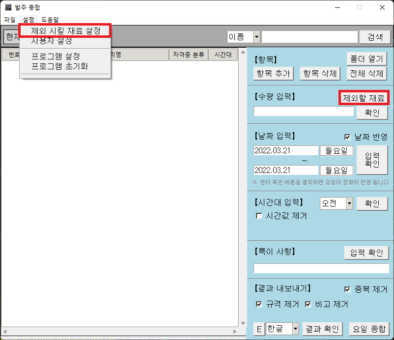
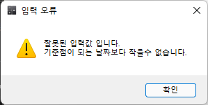
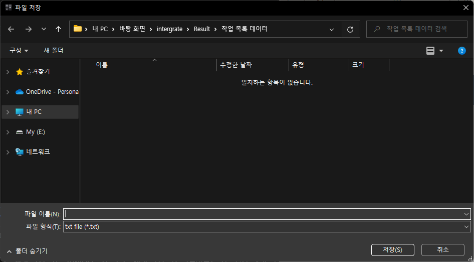

발주 종합 프로그램
사용 설명서
Ctrl+F를 통해 찾고자 하는 키워드에 빠르게 접근 해보세요.
프로그램을 처음 실행했을 경우 아래와 같은 창이 뜬것을 보셨을 겁니다.
이는 현재 사용자가 등록이 안되었기 때문 입니다.
아래의 설명에 따라 사용자 등록을 완료해 주세요
사용자 등록을 하기 위해 사용자 등록창을 실행하여야 합니다.
사용자 등록 창은 크게 두가지의 방법으로 실행 할 수 있습니다.
1. 현재 사용자 를 클릭 하거나.
2. 메뉴바 - 설정 - 사용자 설정 을 클릭 해주세요.
이 프로그램을 사용하는 사용자의 정보를 입력해주세요
작성을 완료 하였으면 메뉴바 - 파일 - 유저 파일 저장 을 눌러 파일을 저장 해주세요
이후 같은 창에 메뉴바 - 설정 - 사용할 유저 설정 에서 이전에 등록해 두었던 파일을 선택해주면 사용자 등록이 완료 됩니다.
아래와 같이 사용자 등록 창에서 【현재 설정된 파일】에 설정한 사용자가 표시되면 정상 등록 된것입니다.
프로그램 메인 화면 에는 현재 사용자에 등록한 사용자가 표시됩니다.
사용할 유저를 변경 하기 위해 메뉴바 - 파일 - 유저 파일 열기를 통해 사용자 정보를 불러온 후
메뉴바 - 설정 - 사용할 유저 설정를 통해 사용자를 변경하면 됩니다.
※1년에 한번씩 조리 기능사 실기시험 변경현황이 나오거나
각 시험의 변동 사항 때문에 파일의 변경사항이 있을때 한번씩 실행 해주시면 됩니다.
이렇게 해둔 이유는 매번 할때마다 내부적으로 파일을 열고 닫으면 시간도 많이 걸릴 뿐더러
매번 할때마다 연산을 해야 하기 때문에 컴퓨터에도 좋지 않다고 판단해 한꺼번에 변경을 할수 있도록 만들었 습니다.
파일을 프로그램에 한번 등록한 이후에 파일의 변동사항이 없다면 상대적으로 연산을 적게 처리 하게 됩니다.
메인 화면에서 메뉴바 - 파일 - 파일 변환 버튼을 눌러주세요.
변환할 파일의 최상위 폴더를 선택해주세요.
ex) 양식 파일중 1개를 변환 하여야 할 경우 양식 폴더를 선택
(최 상위 폴더를 선택하면 복어, 양식, 일식, 중식, 한식 모두 변환이됨.)

만약 아래와 같은 경고창이 뜬다면 모두 허용을 눌러주세요
가급적 파일 변환중에는 기다려 주세요.
파일 변환이 완료되었습니다.
이제 자유롭게 사용 하시면 됩니다.
메인 화면에서 【항목】- 항목추가 버튼을 눌러주세요.
원하는 요리 항목을 선택하고 열기 버튼을 누릅니다.
아래와 같이 항목이 정상적으로 추가 된 모습을 확인 할 수 있습니다.
항목을 또 다른 방법으로 추가 할수 있습니다.
그것은 드래그 앤 드롭을 활용 하는 것입니다.
우선 【항목】- 폴더 열기 버튼을 누릅니다.
폴더에서 원하는 파일을 선택하고
해당 영역에 끌어다 놓으면
항목이 정상적으로 추가가 됩니다.
만약 잘못 주가한 항목이 있다면 해당 항목을 선택 해줍니다.
이 후 항목 삭제 버튼을 눌러서 삭제해줍니다.
만약 전체 삭제를 원한다면 전체 삭제 버튼을 눌러주세요.
아래와 같이 깔끔히 삭제된 모습을 확인 할 수 있습니다.
요리 중에는 여러 가지의 재료값이 있습니다.
그중에서 조미료나 양념 같은것, 한번에 대량 구매해 쓰는 재료들은 매번 발주를 할 필요가 없을 것입니다.
제외할 재료를 설정하여 매번 발주할 필요가 없는 재료를 제외시키세요.
메뉴바 - 설정 - 제외 시킬 재료 설정을 클릭하여 메모장을 실행 합니다.
혹은
【수량 입력】- 제외할 재료를 클릭하여 실행 할 수 도 있습니다.
제외 시킬 목록에 항목을 추가하여 결과로 작성될 발주서에 해당 재료를 제외할수 있습니다.
이때 주의할 점은 한줄에 한개씩 작성해주어야 합니다.
수량을 변경할 요리 항목을 선택 해줍니다.
【수량 입력】- 입력칸 에 원하는 수량을 입력하고
【수량 입력】- 확인 버튼을 눌러줍니다.
아래와 같이 정상적으로 반영된 모습을 확인 할 수 있습니다.
요리에 대한 설정이 완료 되었으면.
결과에 반영될 날짜를 설정 해줍시다.
만약 날짜 반영을 원하지 않는다면 날짜 반영 체크박스를 해제 해주시면 됩니다.
날짜 설정을 따로 하려 한다면 마찬가지로 체크 해제 해주시면 됩니다.
직접 설정 하고자 하는 경우 파일에 직접 들어가서 날짜를 설정 해주세요.
【날짜 입력】- 입력칸 : 첫번째 칸은 발주 일자, 두번째 칸은 납기 일자 입니다.
날짜를 설정 해줍시다.
(요일은 자동으로 반영됩니다.)
작성을 정상적으로 하였다면 굳이 확인을 안해도 상관은 없지만
잘못된 값으로 입력했을 경우 발주서에 잘못된 값으로 작성 되기 때문에
【날짜 입력】- 입력 확인 버튼을 눌러 확인해 줍니다.
1.날짜를 설정할때 납기 일자가 발주 일자 보다 빠를 수 없습니다.
2.날짜 형식을 맞춰서 작성 해주셔야 합니다.
yyyy.mm.dd
yyyy.m.dd
시간 값이 포함되지 않길 원하시면 【시간대 입력】 - 시간값 제거 체크 박스 를 체크해 주세요
시간값을 추가 혹은 변경 하고자 하는 경우.
항목을 선택하고 【시간대 입력】시간값 콤보 박스 에서 원하는 시간을 선택후 【시간대 입력】 - 확인 버튼 을 눌러줍니다.
아래와 같이 정상적으로 반영된 모습을 확인 할 수 있습니다.
시간 값을 빈 값으로 두게 되면 프로그램은 빈 값을 또하나의 시간값으로 인식하여 결과에 반영 합니다.
이 점을 참고 바랍니다.
기본적으로 적용될 시간 값을 설정 할 수 있습니다.
항목을 선택하고 메뉴바 - 프로그램 설정을 클릭해 프로그램 설정 창을 실행해 주세요.
시간 적용값 - 입력칸에 원하는 시간을 입력해주세요.
각 시간대는 콤마(,)로 구분됩니다.
추가 시간대를 원한다면 다음과 같이 작성하면 됩니다.
오전,오후,저녁,기타
다음과 같이 비어있는 시간대 또한 추가가 가능합니다.
오전,오후,저녁,
시간값 설정을 완료하였으면. 적용 버튼을 눌러서 적용해 줍니다.
아래와 같이 정상적으로 반영된 모습을 확인 할 수 있습니다.
발주시 특이사항이 있으면 【특이 사항】- 입력칸에 적어주세요
【특이 사항】- 입력 확인 버튼은 단순히 입력된 값을 확인 하는것이므로 정상적으로 입력하였다면
굳이 안누르셔도 됩니다.
모든 설정을 완료 하였다면 남은것은 결과를 내보내는 것입니다.
【결과 내보내기】- 콤보박스에서 원하는 값을 선택해주세요.
결과 값은 한글(Hwp), 엑셀(xlsx), 텍스트(txt) 3가지 형태로 내보낼수 있습니다.
【결과 내보내기】- 결과 확인 버튼 을 누르면 해당 확장자로 결과가 출력됩니다.
【결과 내보내기】- 중복 제거
중복 제거 체크박스는 기본적으로 체크가 되어 있습니다.
중복 제거 체크박스의 체크를 해제 하면 같은 이름의 재료값이 중복되어 나옵니다.
체크박스에 체크가 되어 있어야 중복된 재료의 이름이 있을때 수량이 자동으로 합쳐줍니다.
다만, 중복 제거가 되어 있는데 재료의 단위가 다르면 같은 이름 일지라도 분리 됩니다.
ex)소고기 1근, 소고기 280g
결과에서 규격을 제거하길 원한다면 【결과 내보내기】- 규격 제거 체크박스 를 체크 해주세요.
결과에서 비고란을 제거하길 원한다면 【결과 내보내기】- 비고 제거 체크박스 를 체크 해주세요.
【결과 내보내기】- E 버튼은 빈 문서 양식을 만들어 줍니다.
한글 내보내기의 결과 입니다.
엑셀 내보내기의 결과 입니다.
텍스트 내보내기의 결과 입니다.
한글 내보내기의 결과 입니다.
엑셀 내보내기의 결과 입니다.
텍스트 내보내기의 결과 입니다.

결과 기본 경로 설정을 통해 초기 위치를 설정 할 수 있습니다.
메뉴바 - 설정 - 프로그램 설정을 클릭해 프로그램 설정 창을 실행해 주세요.
결과 저장 경로 - 입력칸에 원하는 경로를 설정후 경로 적용 버튼을 눌러주세요.
필요에 따라서 작업 목록이 다음에도 쓰일수 있을것입니다.
현재까지 작업한 정보를 저장 하려면 메뉴바 - 파일 - 작업 목록 저장하기 버튼을 눌러주세요.
저장한 목록을 불러오려면 목록 불러오기 를 눌러 주세요
아래와 같이 정상적으로 불러와진 모습을 확인 할 수 있습니다.
목록 저장 기본 경로 설정을 통해 초기 위치를 설정 할 수 있습니다.
메뉴바 - 설정 - 프로그램 설정을 클릭해 프로그램 설정 창을 실행해 주세요.
작업목록 저장 경로 - 입력칸에 원하는 경로를 설정후 경로 적용 버튼을 눌러주세요.
일별로 작업한 결과를 종합하기 요일별 종합 창을 실행시켜야 합니다.
크게 두가지의 방법으로 실행 할 수 있습니다.
1. 메뉴바 - 파일 - 요일별 종합 버튼을 눌러주세요.
2. 【결과 내보내기】 - 요일 종합 버튼을 눌러주세요.
요일 설정 버튼 을 눌러 결과에 적용될 요일을 설정해 주세요.
아래와 같이 정상적으로 적용된 모습을 확인 할 수 있습니다.
항목을 추가 하기 앞서 우선 불러올 값 을 설정해줘야 합니다.
확장자는 한글(hwp), 엑셀(xlsx), 텍스트(txt)를 선택 할 수 있습니다.
주의할 점은 서로 다른 확장자를 혼용한 결과 출력은 불가능 합니다.
이 후 내보낼 값 을 설정해줘야 합니다.
설정을 완료 하였으면. 항목 추가 버튼을 눌러 항목을 추가해 주세요.
항목을 추가 할때는 사용자가 설정한 요일 크기 만큼만 추가가 가능합니다.
만약 공휴일이나, 대체공휴일 등 쉬는날이 있다면 빈 값 추가 를 통해 결과에 나타날 요일을 비울수 있습니다.
빈 값 추가 버튼을 눌러 빈 값을 추가해 주세요.
항목을 선택하고 우측의 ▲버튼과 ▼버튼 을 통해 위치를 조정 할 수 있습니다.
조정을 완료 하였으면. 결과 확인 버튼 을 눌러 결과를 출력 하시면 됩니다.
다음과 같은 창이 뜨면 모두 허용을 눌러주세요.
한글 결과
엑셀 결과
텍스트 결과

재료 항목이 많아진다면 해당 재료를 찾기 힘들어, 값을 설정하기 어려울 것입니다.
상단 콤보 박스에서 원하는 값을 기준으로 검색을 할 수 있습니다.
입력란에 입력을 완료 한 후 검색 버튼 을 눌러 검색 하면 해당 인덱스로 바로 접근합니다.
너무 밝은 화면을 바라보다 보니 눈이 침침해져 작업을 하면서 다크모드를 만들어 보았습니다.
메뉴바 - 설정 - 프로그램 설정 을 클릭해 프로그램 설정을 실행 해줍니다.
다크 모드 체크 박스를체크 한 후 적용 버튼 을 눌러 다크 모드를 적용 할 수 있습니다.
각 기능들에 대해 설명이 필요하다면 툴 팁을 사용 해보세요.
메뉴바 - 설정 - 프로그램 설정 을 클릭해 프로그램 설정을 실행 해줍니다.
툴팁 사용체크 하면 툴팁이 적용 됩니다.
이 프로그램을 사용 하시면서 다음과 같은 경고창을 본 적이 있을 것입니다.
아레아 한글에서는 파일을 열고 기록 하거나 수정 하는등의 작업은,
보안사고가 일어날수 있기 때문에 이와 같은 승인 절차가 필요한것입니다.
한글에서 제공하는 보안 승인 모듈을 다운 받아 레지스트리에 키값을 등록하면 보안 알림을 끌 수 있습니다.
한글 보안 승인 모듈 다운로드 링크